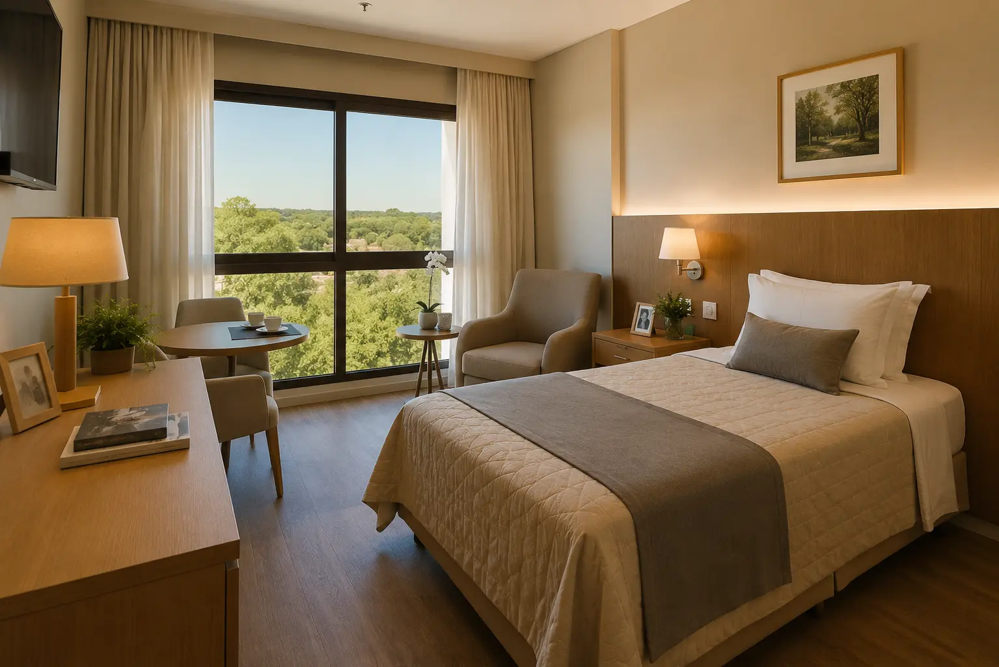

Muitas famílias ainda associam hospedagem sênior a imagens do passado — internações involuntárias, asilos públicos, distância e isolamento. Este artigo existe para mostrar que o cuidado moderno é outro mundo: mais próximo de um hotel com estrutura de saúde do que de qualquer imagem que a memória cultural carrega.

Durante boa parte do século XX, o cuidado institucional para pessoas idosas no Brasil esteve associado a uma realidade muito distante da hospitalidade. Asilos públicos superlotados, estruturas precárias, restrições de autonomia, afastamento familiar e, em muitos casos, internações sem consentimento real — essa foi a experiência que moldou a memória coletiva.
Esse passado não precisa ser negado. Ele foi real. Mas ele não é o presente. E quando uma família sente resistência emocional ao ouvir "hospedagem sênior", é geralmente esse passado — e não a realidade atual — que está falando mais alto.
Para entender a evolução de cada um desses conceitos, o artigo sobre a diferença entre asilo, casa de repouso e residencial sênior clareia o que historicamente separou cada modelo.
Comparar não é romantizar o presente. É oferecer às famílias uma perspectiva justa sobre o que realmente encontrarão quando visitarem um bom residencial sênior hoje.
Quando alguém se hospeda em um hotel, não chamamos de internação. Ninguém sente que está abandonando quem ficou em casa. E ainda assim, a lógica é essencialmente parecida com a da hospedagem sênior.
Assina um contrato de serviços. Usa um quarto privativo. Recebe refeições, limpeza e suporte. É livre para sair. O contrato termina quando a pessoa quiser. A hospedagem sênior funciona exatamente dentro dessa lógica — com a adição de uma equipe de cuidado, rotinas de saúde e um ambiente projetado para o bem-estar do envelhecimento.
Para entender como o grau de dependência da pessoa define o tipo de hospedagem mais adequada — e o custo envolvido — esse artigo é um ponto de partida fundamental.
Sim — e em residências sérias, sem necessidade de agendamento prévio. A visitação aberta não é um benefício extra: é um sinal de qualidade. Residenciais que impõem restrições arbitrárias às visitas normalmente têm algo que não gostariam que as famílias vissem.
A família pode aparecer durante o dia sem necessidade de aviso prévio. Bons residenciais estão sempre prontos para receber — porque a rotina real não muda com a visita.
Em horários tardios, pode existir pedido de discrição para preservar o sono dos demais residentes. É o mesmo respeito esperado em qualquer hotel — não uma restrição de acesso.
Em momentos de surto respiratório ou outras condições de saúde pública, podem existir protocolos temporários — como em qualquer ambiente de saúde. São medidas de proteção, não de isolamento.
Em bons residenciais, a família recebe atualizações regulares e participa das decisões sobre saúde e rotinas. O vínculo afetivo não é externo ao cuidado — é parte fundamental dele.
Um critério objetivo da SAFE ILPIS: ao avaliar cada parceira, a abertura para visitas não agendadas é um dos primeiros testes. Veja o que mais avaliamos no guia sobre como escolher uma casa de repouso.
Uma das maiores fontes de ansiedade das famílias é a sensação de que hospedar significa uma decisão irrevogável. Não é. A hospedagem sênior moderna é dinâmica — pode começar pequena, crescer conforme as necessidades e ser encerrada com aviso prévio.
O cuidado evolui junto com a pessoa. Uma família pode iniciar com Day Use — enquanto o idoso se adapta à equipe e às rotinas — e avançar para hospedagem permanente apenas quando fizer sentido para todos. Essa transição gradual é, aliás, a que tende a ser mais tranquila e menos traumática.
Uma perspectiva útil: ao comparar os custos reais do cuidado domiciliar com os de uma hospedagem integrada, as famílias frequentemente se surpreendem. Veja nossa análise sobre o que realmente custa uma operação de cuidado ao idoso.
O Day Use é a modalidade em que a pessoa idosa utiliza toda a estrutura do residencial durante o dia — e retorna para casa à noite. O que o torna especialmente valioso é que ele resolve ao mesmo tempo uma necessidade da pessoa idosa e do familiar cuidador.
Café, almoço e lanche com nutrição supervisionada e adequada ao perfil clínico.
Cognitiva, física e emocional — com profissionais dedicados e programação estruturada.
Com pares da mesma geração — um dos fatores mais importantes para o bem-estar geriátrico.
Pressão, medicamentos, sinais vitais e acompanhamento clínico durante o período.
Presença de equipe treinada para lidar com ansiedade, saudade e momentos difíceis.
À noite, a pessoa volta — mantendo o vínculo familiar e a rotina doméstica intactos.
Para o familiar cuidador: enquanto o seu familiar está bem cuidado e estimulado, você tem um período real de descanso — sem culpa e sem sobrecarga. O Day Use é frequentemente o primeiro passo que abre caminho para uma transição tranquila quando a hospedagem permanente se torna necessária.
"Você não está escolhendo uma vaga. Você está construindo uma estrutura de cuidado para alguém que precisa — e para uma família que não consegue mais carregar isso sozinha."— Equipe SAFE ILPIS
Um bom residencial sênior resolve moradia, alimentação, higiene e cuidado físico. Mas cuidado completo vai muito além disso.
A SAFE ILPIS não indica uma vaga. Monta um plano. Considerando o grau de dependência da pessoa, o orçamento disponível e as necessidades específicas, estruturamos um plano de cuidado integrado onde o custo total é frequentemente menor do que contratar cada serviço separadamente.
Famílias que contratam cuidadora, alimentação, medicamentos, monitoramento e suporte emocional separadamente pagam, no total, mais do que uma hospedagem integrada bem estruturada — e com muito menos coordenação. O plano integrado é mais completo e mais econômico ao mesmo tempo.
A SAFE ILPIS monta o plano certo para cada perfil — considerando dependência, orçamento e necessidades reais. Uma conversa de 20 minutos já clareia tudo. E é totalmente gratuita.
Quero conhecer os planos de cuidado SAFE✓ 100% gratuito para famílias · ✓ Sem compromisso · ✓ No seu tempo
A SAFE ILPIS monta o plano certo — do Day Use à hospedagem completa — para que a sua família pague menos e receba mais. Gratuitamente, sem pressão e no seu tempo.
Quero conhecer os planos de cuidado SAFE